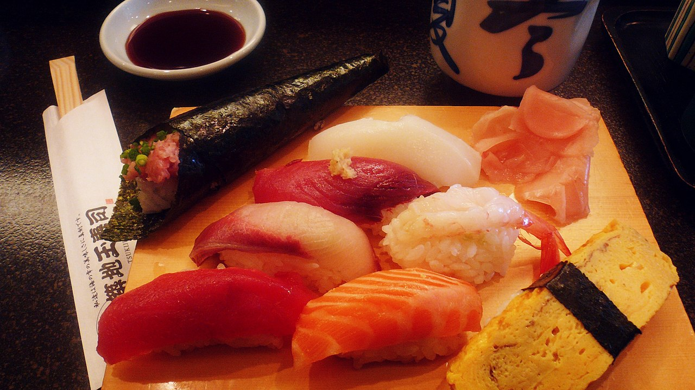
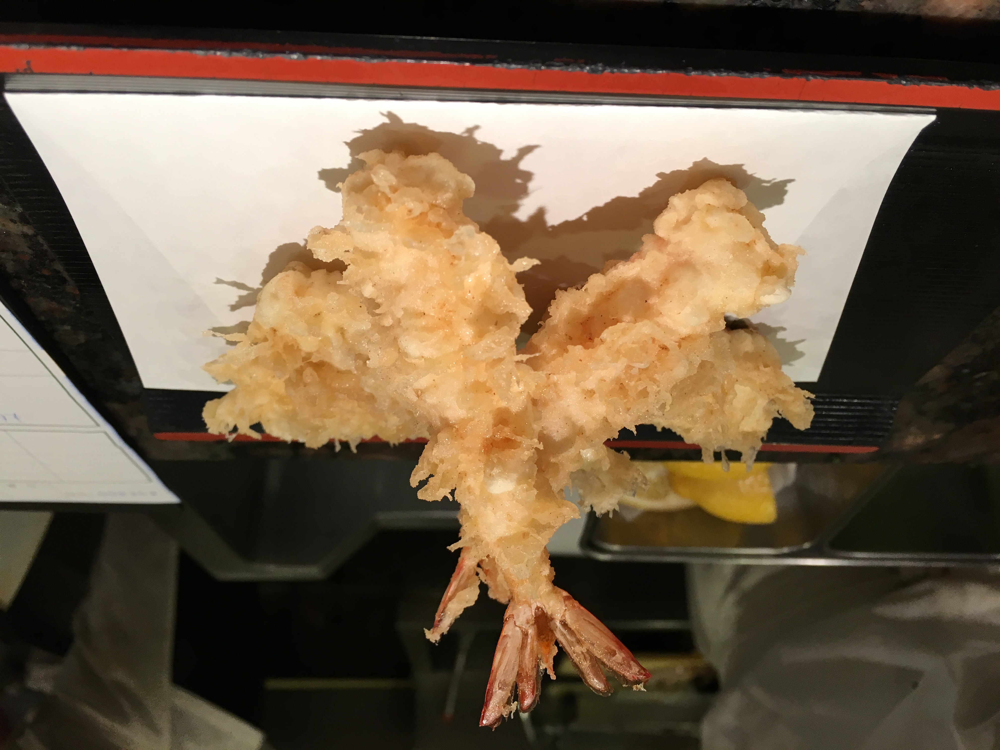

Sushi

Arroz avinagrado, pescado fresco o vegetales, enrollados en alga nori o moldeados como nigiri.
Ramen

Sopa con fideos de trigo, caldo de carne o miso, carne de cerdo, huevo, nori y cebollín.
Tempura

Mariscos y verduras rebozados con masa ligera y fritos hasta quedar dorados y crujientes.
Okonomiyaki
Tortilla japonesa con repollo, harina y huevo, cocida a la plancha y decorada con salsa.
Matcha Latte
Té verde matcha en polvo batido con agua caliente y leche para una bebida suave y espumosa.
Sake
Bebida alcohólica obtenida de la fermentación del arroz, servida fría o caliente.